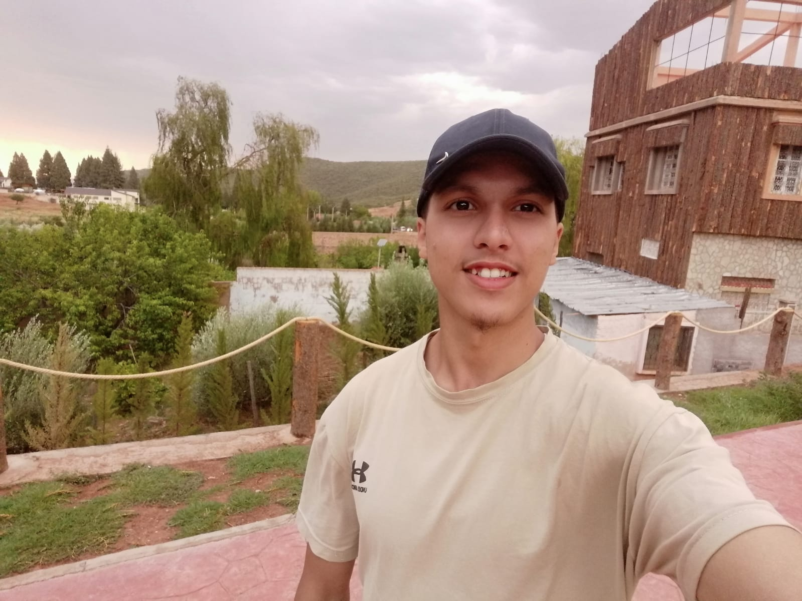

Touzani
Yassine
M120081781
2003yassinetouzani@gmail.com

Je m'appelle yassine touzani, et je suis actuellement étudiant en licence informatique passionné par la création de solutions
numériques innovantes. Au cours de mes études, j'ai décidé de combiner ma passion pour la technologie avec mon amour pour
le voyage et la découverte.
J'ai développé un site web touristique dédié au Maroc, un projet qui me tient particulièrement à cœur.
Ce site vise à offrir aux visiteurs une expérience immersive, mettant en lumière la richesse culturelle,
historique et naturelle de ce magnifique pays. Vous pourrez explorer différentes destinations, découvrir la cuisine marocaine,
trouver des informations pratiques pour les voyages, et bien plus encore.
Mon objectif avec ce projet est de non seulement partager la beauté du Maroc, mais aussi de créer une plateforme
conviviale pour les voyageurs potentiels. J'ai travaillé sur chaque détail pour rendre le site informatif,
interactif et esthétiquement agréable.
Merci de prendre le temps de découvrir mon projet, et n'hésitez pas à me contacter si vous avez
des questions ou si vous souhaitez en savoir plus.
Cordialement,
Touzani Yassine
Étudiant en Licence Informatique.